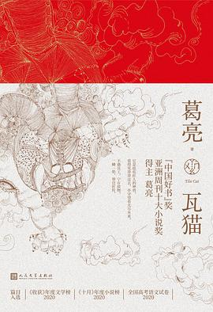

畅销图书榜
合作联系：xxx@xxx.com
-
2081年日本·京都。 信息忧郁症，是日本这个超信息化社会的灾难级心理疾病，许多民众因此走上自杀一途。科学家道终常一企图改变这场浩劫，研发出了人造脑叶——“电子叶”，只要将之装进大脑便能有效管理信息，是一举扭转人类文明的重大科技革命。然而，世界并未按他的理想发展下去…… 道终常一最后一位指导过的学生御野连，遵守与老师的约定进到政府工作，并在偶然间发现老师留下的“暗号”。没料到在前方等待他的却是一名少女……重重谜团令御野无所适从，老师的身上究竟发生了什么事？神秘少女又是谁？这一切的答案，似乎都在她的身上……
-
《王家卫的电影世界》是系统论述香港导演王家卫的开先河之作，作者在回顾王家卫职业生涯的同时，又深入分析了其迄今为止的电影创作。此外，作者还将王家卫拍摄的广告、MV等一并纳入讨论范围。本书剖析了王家卫所受到的电影和文学方面的影响（从马丁·斯科塞斯到希区柯克，从曼努埃尔·普伊格到村上春树），并且审视了王家卫如何超越这些影响。著名电影学者达纳·伯兰认为：“张建德尤其擅长分析加诸王家卫影片的各种不同的美学影响，王家卫通过将这些影响纳入其影片的肌理，从而将其变成自己的。值得称道的是，张建德准确地指出，王家卫影片背后的互文场域所牵涉的并非单一门类的灵感来源：他解释了王家卫所指涉、挪用的其他艺术家和艺术门类的美学实践为何如此重要，以及它们如何建构了王家卫影片的独特面貌和叙事特性。
-

“太阳总有办法照到我们，不管我们在哪里。” ~ 克拉拉是一个专为陪伴儿童而设计的太阳能人工智能机器人（AF），具有极高的观察、推理与共情能力。她坐在商店展示橱窗里，注视着街头路人以及前来浏览橱窗的孩子们的一举一动。她始终期待着很快就会有人挑中她，不过，当这种永久改变境遇的可能性出现时，克拉拉却被提醒不要过分相信人类的诺言。 在《克拉拉与太阳》这部作品中，石黑一雄通过一位令人难忘的叙述者的视角，观察千变万化的现代社会，探索了一个根本性的问题：究竟什么是爱？ ~ “你相信有‘人心’这回事吗？ 我不仅仅是指那个器官，当然喽。 我说的是这个词的文学意义。 人心。你相信有这样东西吗？ 某种让我们每个人成为独特个体的东西？”
-
人们在本雅明死后多年才一拥而来的那些赞誉和崇拜，要是能够分一点到他生前，本雅明就不必如此狼狈一生，也不用四十几岁就绝望自杀于法西边界的比利牛斯山区。当然，能救援他的不直接是声誉，而是声誉带来的可换得的东西：一些钱，或一本护照。诸如此类的故事还能想到许多，比方梵高，还有爱伦·坡。 声誉只是一根绳子，它本身也许毫无价值还带点做张做致，但它系着很多有价值的人和东西。唐诺全新作品《声誉》，这一趟有关声誉、财富和权势的简单思索，真正关怀的是声誉如今的模样和处境而已——由财富统治的世界和由权势统治的世界，哪一个是声誉比较困难的当下处境？ 认定这是本小册子，把自己限制在一般常识层面上，用常识性材料工作。这回引述的书，像《瓦尔登湖》《基督山伯爵》《高老头》《环游世界八十天》等一般读者尽可能有印象的书。唐诺用自己特有的方式，努力把一个个四下散落的常识试着聚拢、连缀起来...
-
◎脑子里的记忆可信，还是写下来的文字可信？ ◎电波系推理小说 超能力与反超能力 看完整本书后再翻回开头，或许会感到脊背发凉。 ------------------------------------------------ ★内容介绍 青年二吉在家中醒来，一时茫然，直到打开一个笔记本，他才意识到问题的严重性：自己患有记忆方面的疾病，为了融入正常生活，会把重要事项都记在笔记本上。 二吉接受了这个现实，打算努力依靠笔记本活下去，却没想到偶遇了一位“怪人”，并被扯入一桩故意伤人事件之中。 二吉能凭借这本笔记本让真凶归案吗？完全相信笔记本上的内容又真的明智吗？
-

比尔·盖茨精选推荐！ 2020年卡尔·萨根科普奖得主马修·沃克成名作品 《纽约时报》畅销书排行榜NO.1 全景呈现熟悉又陌生的睡梦领域，让你轻松获得一夜好眠！ ◎ 编辑推荐 “要使大脑和身体健康恢复到最佳状态，我们唯一能做的也是最有效的事，就是睡觉，它是大自然赐予我们的最佳对抗死亡方法。” ★ 比尔·盖茨盛赞推荐，称此书让他告别熬夜，开始好好睡觉！ 全球销量已突破100万册，被译为34种语言畅销世界！为什么要睡觉，睡不好有什么坏处，怎么睡个好觉，一切答案尽在其中。 ☆ 2020年卡尔·萨根科普奖得主马修·沃克成名之作。 《纽约时报》《星期日泰晤士报》畅销书排行榜NO.1，《观察家报》《金融时报》《卫报》《每日邮报》《标准晚报》年度选书，一部不可不看的权威力作。 ★ 我们生命中有1/3的时间都在睡觉，但你是否真的了解这件平常之事？ 酒精、空调、LED屏...
-

【编辑推荐】 ●《瓦猫》是一本有关手艺人的小说，然而又不全是。他们经手而成的物件，是曾在这世界过往的zui好宣示。他们的命运，交织与成全于历史；他们的尊严、执着与信仰，如棱镜，折射这世上大多数的我们；他们是这时代的理想主义者，行到水穷处，坐看云起时。 ●篇目在杂志刊发后 ，即跻身“收获文学榜”“十月小说榜”等各大文学榜单，并被《新华文摘》等刊物纷纷转载。其中《书匠》更入选2020年全国高考语文试卷阅读题，在网络上引起广泛热议。 ●华美精装，专色印刷，特邀知名设计师设计，封面插画由九岁艺术神童绘制。封面用纸采用米白稻香，典雅素朴，二封为宫墙红，庄重浓烈，内文60g瑞典轻型纸，随身携带不负重。 【内容简介】 《瓦猫》一书事关手艺，其中涉及古籍修复师、理发师以及陶艺师三个匠种，空间跨越三城三地，由南京、香港到昆明，从江南、岭南再至⻄南，时间跨度则从当代溯至...
-
普利策奖得主、《世界是平的》作者托马斯 • 弗里德曼，诺贝尔经济学奖得主约瑟夫 • 斯蒂格利茨，美国著名智库布鲁金斯学会前主席斯特罗布 • 塔尔博特联袂推荐 一部世界物质文化交流史 …………………… ◎ 编辑推荐 ★ 本书通过极具代表性的商品的全球旅程，讲述从古至今全球化的发展及影响 ★ 流动的资本、贸易和技术塑造了即时连接、相互依存的今日世界；从身体里的细胞到日常生活中的必需品，人类通过跨越空间与时间的无形之线相连 ★ 从人类走出非洲大陆到21世纪，探究物品与思想的全球旅程 ·棉花原产于印度，后被推广到全世界，继而被美国棉花取代 ·咖啡一度只在阿拉伯世界流行，后来征服全球，为成千上万人提供了工作岗位 ·助推信息革命的微芯片，脱胎于持续千年、范围遍及三大洲的数学与物理概念的演绎 ………………………… ◎ 媒体推荐 纳扬 • 昌达写了一部在我看...
-
本书详尽地讲述了克拉丽莎·达洛维为了一个上流社会派对所做的筹备，通过每个人物的回忆、联想，穿梭时空和进出人物内心世界，由此铺开了她的爱恨纠葛，她的处境，她的青春，衰老给她带来的死亡的恐惧以及客人的到来引起她的对人际恩怨的回顾，小说充满了意识流的描写，想象丰富，给读者带来全新的体验。 编辑推荐： 1.10部传世力作，首次结集《伍尔夫作品集》丛书。 2.20多个角色的自由切换，用一天时间写尽女人的一生。 3.依据多个版本互相参校。 4.20世纪伟大的现代主义作家与女性主义文学先锋，也是英国文学界的一位传奇人物。在两次世界大战期间，是伦敦文学界的核心人物，同时也是知名文学组织“布鲁姆茨伯里派”的组织者之一。 专业书评： 英国传记作家福斯特：“她属于诗的世界，但又迷恋于另一个世界，她总是从她那着了魔的诗歌之树上伸出手臂，从匆匆流过的日常生活的溪流中抓住一些碎...
-
《流放者归来》对年轻一代甩掉前人的包袱、开创自己的风格的赞美，激励了一代又一代在这些故事里找到共鸣的读者。而且，这种作用仍在继续。 ——唐纳德·福克纳（文学评论家） *** 1920年代，海明威、菲茨杰拉德、多斯·帕索斯……这些后来创造了美国文学黄金时代的年轻作家倍感疏离与压抑，纷纷逃离美国，来到巴黎寻找自由的生活和归属感。 他们便是“迷惘的一代”。他们之所以迷惘，是因为他们与过去脱离了关系，无法接受过去的那套行为规范，是因为他们想生活在流放中。他们向着一个新的人生目标探索，在疑惑、不安与反抗中写作、喝酒、观看斗牛、和情人做爱，同时又依然思念着早已失落的故乡。 《流放者归来》描述了这一代年轻人自我流放与重新归来的冒险历程。它对他们甩掉前人的包袱、开创自己的时代的赞美，激励了此后一代代年轻人。 在中国，《流放者归来》曾多次再版，影响深远，曾入选“20年...